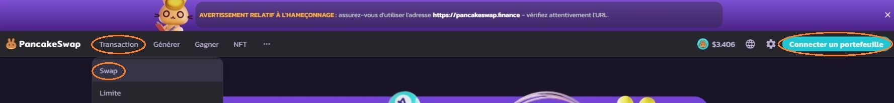
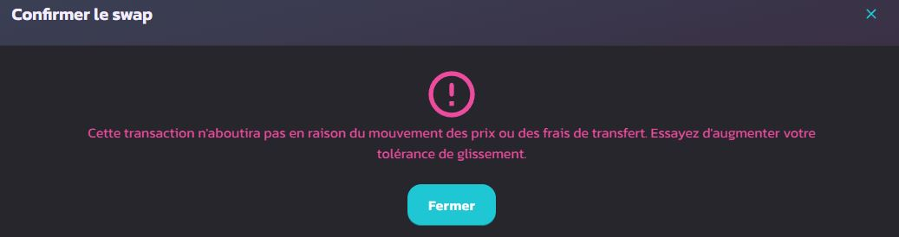

- 6. Les échangeurs décentralisés / DEX -
6.1 Introduction
Les DEX (Decentralized Exchanges ou échangeurs décentralisé en francais) sont des plateformes qui vont principalement vous servir à SWAP vos monnaies, c'est à dire échanger vos cryptomonnaies contre d'autres sans avoir besoin de passer par un exchange.
L'avantage des DEX, c'est que vous pourrez avoir accès a toutes les monnaies présentes sur la blockchain alors que les exchange ne vous propose qu'un petit échantillon des tokens les plus utilisées.
D'autres services seront aussi disponibles comme le stacking et les pools de liquidité que nous verrons dans le chapitre 6, et d'autres petites choses.
Vous ne devrez pas créer de compte, vous vous connecterez à ces plateformes grâce à votre wallet privé (Metamask le plus souvent).
Dans le futur, des DEX proposeront sûrement d'échanger des tokens d'une blockchain à l'autre, mais pour l'instant ils faudra utiliser un DEX par blockchain, nous allons voir les deux les plus utilisés ci-dessous.
6.2 Pancakeswap - BSC
pancakeswap.finance est le DEX le plus utilisé pour la Binance Smart Chain (la blockchain de binance).

Pour connecter votre portefeuille, vous devrez ouvrir le site sur le même navigateur que celui sur lequel vous avez installé votre Metamask, puis cliquer sur "connecter un portefeuille".
Pour Faire un swap il faudras aller sur "Transaction" puis sur "Swap".
Vous arriverez sur cette page, indiquez dans la bulle du haut la monnaie que vous voulez échanger et dans la bulle du bas la monnaie que vous voulez recevoir.
La première fois que vous utiliserez une monnaie sur Pancakeswap vous devrez l'activer, ce qui vous coûtera quelques centimes.
Sinon cliquez sur SWAP et une fenêtre de confirmation vas s'ouvrir, cliquez sur "Confirmer le swap" pour continuer. Cela ouvrira automatiquement votre Metamask qui vous notifiera les frais de transaction et enfin pouvoir terminer votre action.

Mais plus vous allez l'augmenter plus vous risquez de payer des frais élevés attention.
6.3 Uniswap - ERC20
app.uniswap.org est le DEX le plus utilisé pour la blockchain Ethereum.
L'interface est plus sommaire, mais il fonctionne de la même façon que Pancakeswap, pour connecter votre portefeuille, vous devrez ouvrir le site sur le même navigateur que celui sur lequel vous avez installé votre Metamask.
Cliquez sur "Connecter le portefeuille" en haut à droite, dans la fenêtre d'échange, mettez en haut la monnaie que vous voulez échanger et en bas la monnaie que vous voulez recevoir puis cliquez sur "Échanger". Les frais de transactions vous sont directement indiqués.
Une nouvelle fenêtre de récapitulatif va s'ouvrir, cliquez sur "Valider le swap". Ensuite vous devrez confirmer sur votre Metamask qui s'ouvrira automatiquement pour finaliser la transaction.